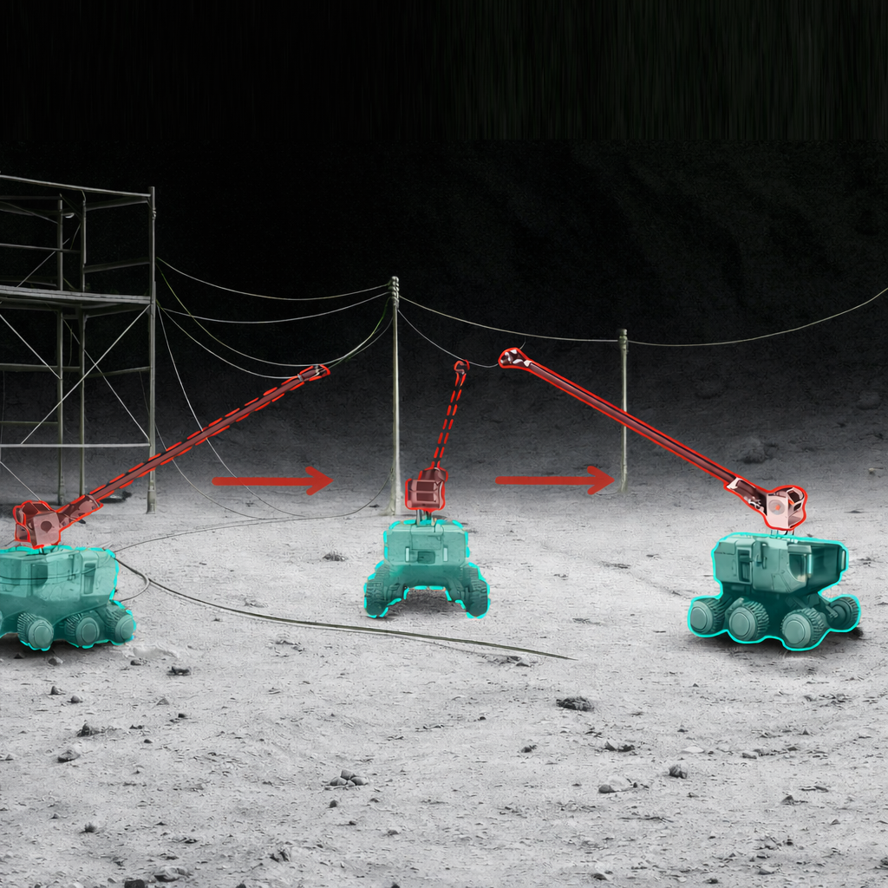
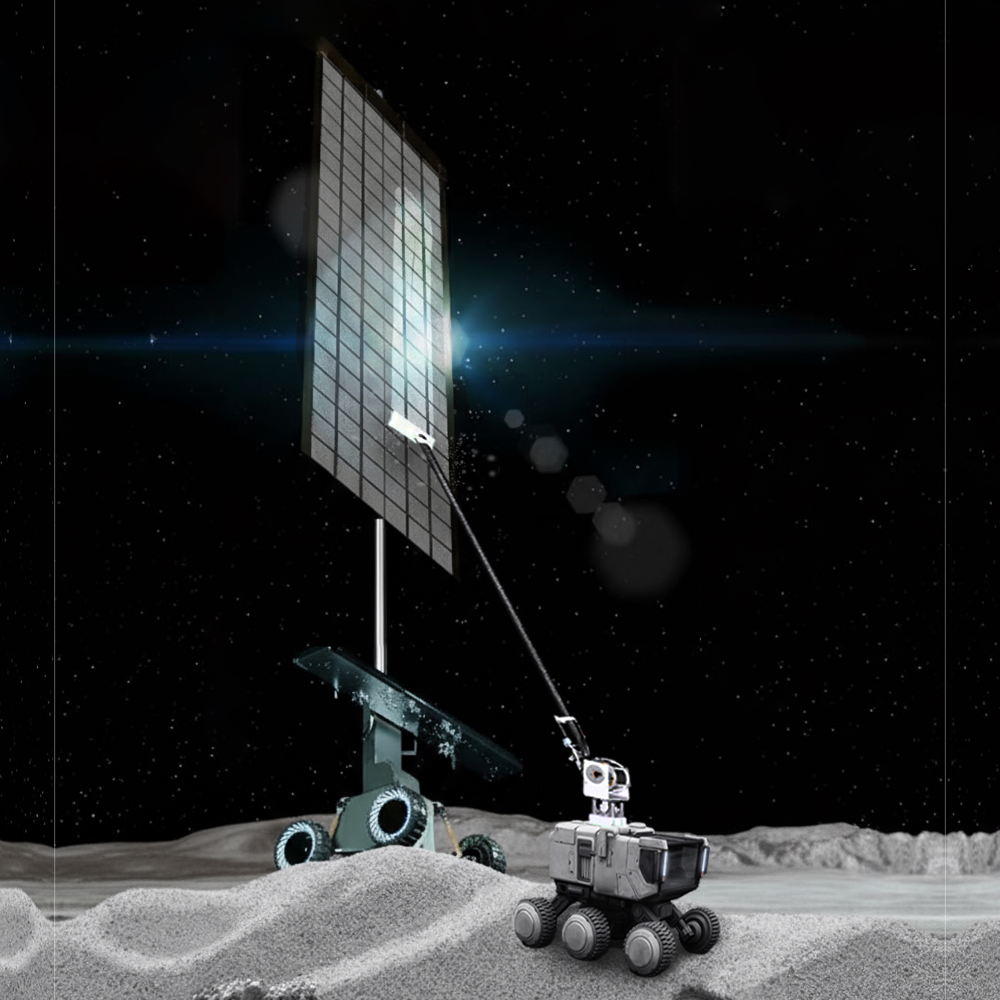

Stanley Wang
Roboticist and researcher focusing on long-reach manipulation, lunar robotics, and autonomous systems. Passionate about designing innovative solutions for complex robotic challenges in extreme environments.
Publications

Long-Reach Manipulation for Assembly and Outfitting of Lunar Structures
iSpaRo, 2025
A compact and long-reach manipulator incorporating a deployable composite boom for autonomous assembly and outfitting tasks on the lunar surface.
Workshops

Long-Reach Robotic Cleaning for Lunar Solar Arrays
iSpaRo, 2025
Exploring the application of long-reach manipulation systems for maintaining and cleaning solar arrays in the lunar environment.